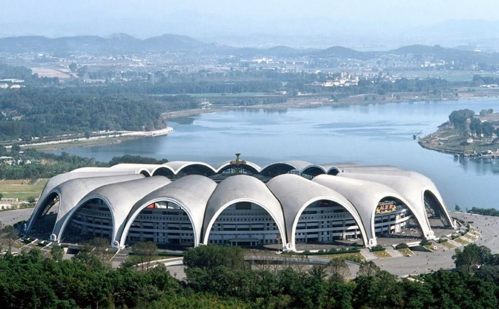
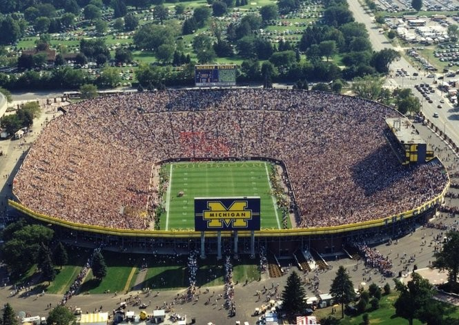
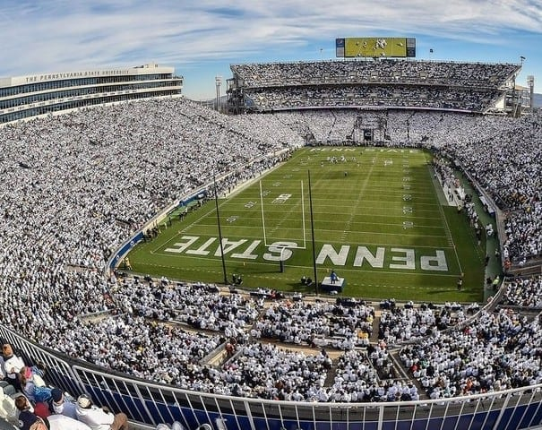
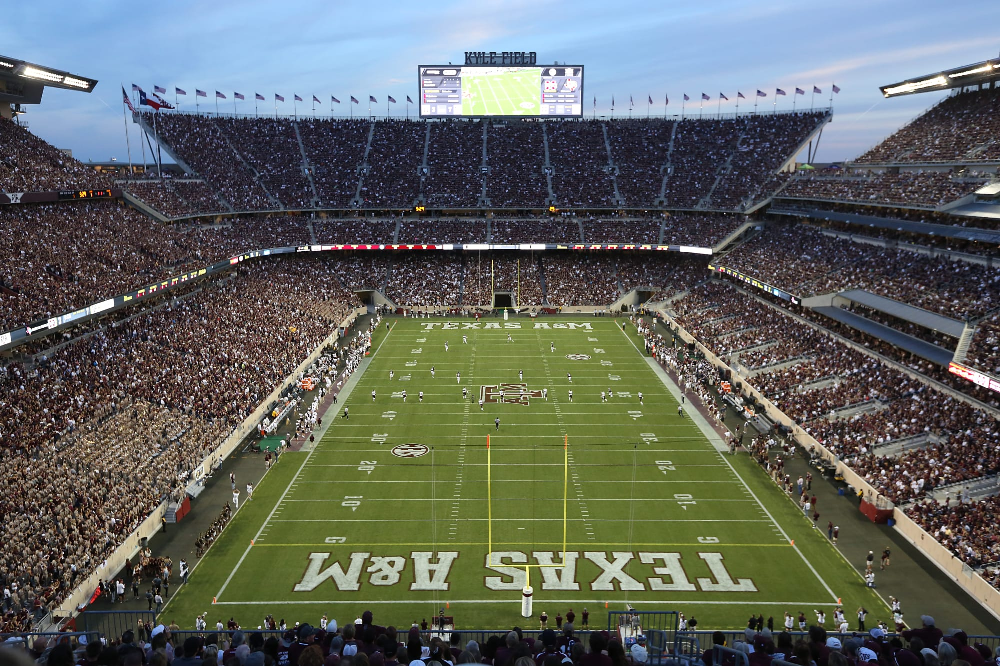
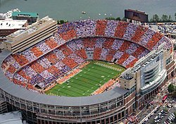

| Rungrado 1st of May Stadium |
Pyongyang, North Korea |
150,000 |
1989 |
North Korea Soccer Matches, Arirang Performances |

|
| Narendra Modi Stadium |
Ahmedabad, India |
132,000 |
1983 |
Indian Premier League Cricket Matches |
 |
| Michigan Stadium |
Ann Arbor, Michigan |
107,601 |
1927 |
Michigan Wolverines Football Team |

|
| Beaver Stadium |
State College, Pennsylvania |
106,572 |
1960 |
Penn State Football |

|
| Ohio Stadium |
Columbus, Ohio |
102,780 |
1922 |
Ohio State Football |

|
| Kyle Field |
College Station, Texas |
102,733 |
1927 |
Texas A&M Football |

|
| Neyland Stadium |
Knoxville, Tennessee |
102,455 |
1921 |
Tennessee Football |

|